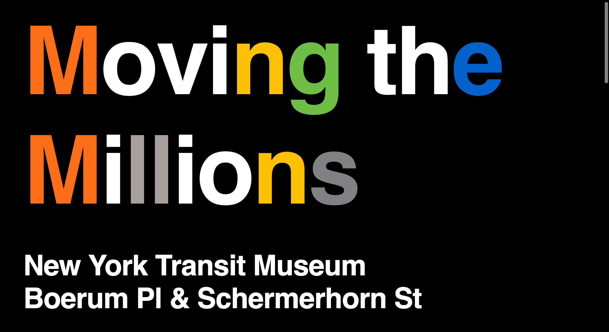
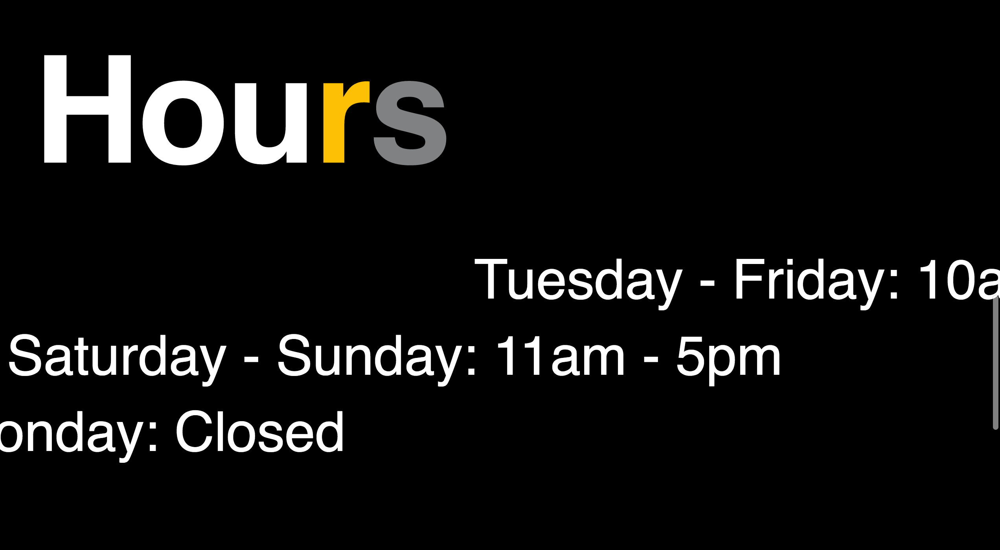
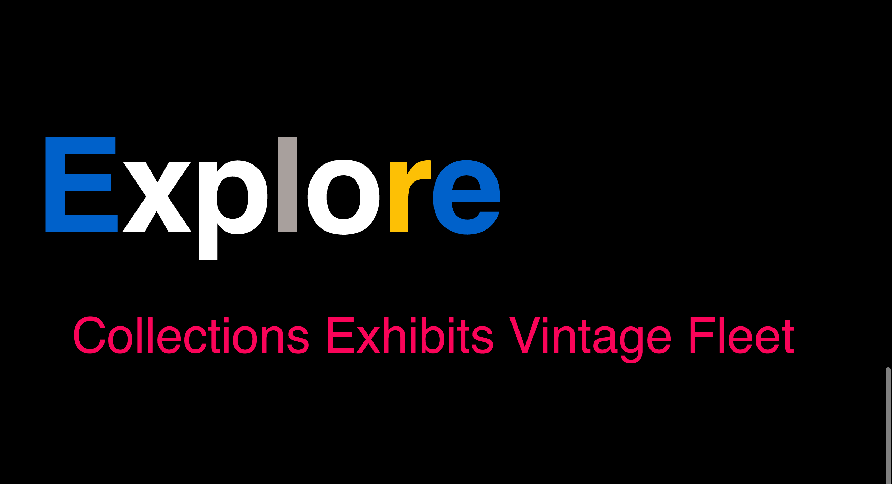

Bushra Sarker
Core Studio Interaction
I created an interactive sign that represents one of my favorite cultural institutions in New York City. As someone who relies on the facinating subway system to venture through one of the most interesting cities in the world, it became an integral part of my life in which I observe, cherish and experiance for better or worse. It only felt right to create a project about a system I use everyday and exhibit the exciting designs of the subway system. The New York Transit Museum, located underground on a working railroad showcases the history of the New York transit system. My favorite exhibit which I chose to represent in my project is called Moving the Millions and it is filled with vintage trains. From the many colors, shapes and vintage advertisments, it is definately a part of New York City that you don't want to miss.
Throughout my project you will notice certain letters highlighted in a particular color. These colors and letters are directly associated with how people coordinate through the subways. It is meant to represent the wayfinding signs that are found throughout the subways so the viewer can put my sign into context right away.

As you scroll down the page, it provides a description of the exhibit to allow the viewers to understand what it is about that hopefully interests them to go. The text scroll in two different directions to represent the visuals of a train when the cross eachother at a station.
As you scroll further down the page, it provides more information about the hours you can visit. The text scroll in both directions at different speeds. This is to represent the idea of motion in "Moving the Millions" as both people who scurry through the system or simply trains that pass each other by.

Lastly, you'll reach the explore section of the page where the viewer is free to look into the Museum further before visiting. It has the option to look at the collections, exhibits and vintage cars that the Museum holds. It is represented as the sign that is found inside the train that shows you where your next stop could be. I tried to play around with that in terms of color and the way the text scrolls. When you hover over the text, the scrolling stops and you can hop off to your next destination.
